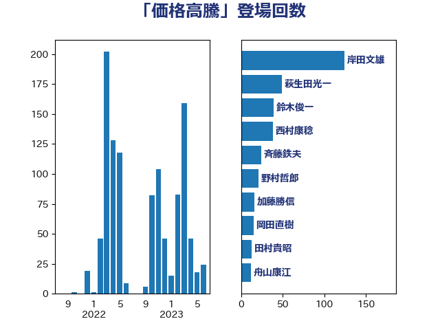

単語「価格高騰」

| 岸田文雄 | 自由民主党 | 124 回 |
| 萩生田光一 | 自由民主党 | 49 回 |
| 鈴木俊一 | 自由民主党 | 39 回 |
| 西村康稔 | 自由民主党 | 38 回 |
| 斉藤鉄夫 | 公明党 | 24 回 |
| 野村哲郎 | 自由民主党 | 21 回 |
| 加藤勝信 | 自由民主党 | 16 回 |
| 岡田直樹 | 自由民主党 | 15 回 |
| 田村貴昭 | 日本共産党 | 13 回 |
| 舟山康江 | 国民民主党 | 12 回 |
| 金子恭之 | 自由民主党 | 11 回 |
| 細田健一 | 自由民主党 | 11 回 |
| 道下大樹 | 立憲民主党 | 10 回 |
| 谷合正明 | 公明党 | 10 回 |
| 石井啓一 | 公明党 | 10 回 |
| 里見隆治 | 公明党 | 9 回 |
| 稲津久 | 公明党 | 9 回 |
| 岩田和親 | 自由民主党 | 9 回 |
| 安江伸夫 | 公明党 | 9 回 |
| 大島敦 | 立憲民主党 | 9 回 |
| 藤木眞也 | 自由民主党 | 8 回 |
| 大西英男 | 自由民主党 | 8 回 |
| 金城泰邦 | 公明党 | 7 回 |
| 庄子賢一 | 公明党 | 7 回 |
| 伊藤岳 | 日本共産党 | 7 回 |
| 礒崎哲史 | 国民民主党 | 6 回 |
| 後藤茂之 | 自由民主党 | 6 回 |
| 宮崎雅夫 | 自由民主党 | 6 回 |
| 中野英幸 | 自由民主党 | 6 回 |
| 中野洋昌 | 公明党 | 6 回 |
| 芳賀道也 | 国民民主党 | 5 回 |
| 竹詰仁 | 国民民主党 | 5 回 |
| 石川博崇 | 公明党 | 5 回 |
| 田村まみ | 国民民主党 | 5 回 |
| 渡辺猛之 | 自由民主党 | 5 回 |
| 武部新 | 自由民主党 | 5 回 |
| 松本剛明 | 自由民主党 | 5 回 |
| 斎藤アレックス | 国民民主党 | 5 回 |
| 下野六太 | 公明党 | 5 回 |
| 長友慎治 | 国民民主党 | 4 回 |
| 金子恵美 | 立憲民主党 | 4 回 |
| 野田聖子 | 自由民主党 | 4 回 |
| 紙智子 | 日本共産党 | 4 回 |
| 簗和生 | 自由民主党 | 4 回 |
| 石川香織 | 立憲民主党 | 4 回 |
| 田名部匡代 | 立憲民主党 | 4 回 |
| 牧山ひろえ | 立憲民主党 | 4 回 |
| 横沢高徳 | 立憲民主党 | 4 回 |
| 森本真治 | 立憲民主党 | 4 回 |
| 林芳正 | 自由民主党 | 4 回 |
| 松野博一 | 自由民主党 | 4 回 |
| 徳永エリ | 立憲民主党 | 4 回 |
| 市村浩一郎 | 日本維新の会 | 4 回 |
| 岩渕友 | 日本共産党 | 4 回 |
| 山際大志郎 | 自由民主党 | 4 回 |
| 小野泰輔 | 日本維新の会 | 4 回 |
| 大塚耕平 | 国民民主党 | 4 回 |
| 古川元久 | 国民民主党 | 4 回 |
| おおつき紅葉 | 立憲民主党 | 4 回 |
| 須藤元気 | 無所属 | 3 回 |
| 音喜多駿 | 日本維新の会 | 3 回 |
| 阿達雅志 | 自由民主党 | 3 回 |
| 赤羽一嘉 | 公明党 | 3 回 |
| 西村明宏 | 自由民主党 | 3 回 |
| 西岡秀子 | 国民民主党 | 3 回 |
| 船橋利実 | 自由民主党 | 3 回 |
| 細田博之 | 自由民主党 | 3 回 |
| 笠井亮 | 日本共産党 | 3 回 |
| 石垣のりこ | 立憲民主党 | 3 回 |
| 玉木雄一郎 | 国民民主党 | 3 回 |
| 片山さつき | 自由民主党 | 3 回 |
| 清水貴之 | 日本維新の会 | 3 回 |
| 浜田聡 | NHK党 | 3 回 |
| 河野義博 | 公明党 | 3 回 |
| 横山信一 | 公明党 | 3 回 |
| 梅村みずほ | 日本維新の会 | 3 回 |
| 岡本三成 | 公明党 | 3 回 |
| 山崎誠 | 立憲民主党 | 3 回 |
| 太田房江 | 自由民主党 | 3 回 |
| 和田義明 | 自由民主党 | 3 回 |
| 古賀友一郎 | 自由民主党 | 3 回 |
| 伊藤渉 | 公明党 | 3 回 |
| 中谷真一 | 自由民主党 | 3 回 |
| 中川貴元 | 自由民主党 | 3 回 |
| 上田勇 | 公明党 | 3 回 |
| 高橋光男 | 公明党 | 2 回 |
| 青柳仁士 | 日本維新の会 | 2 回 |
| 階猛 | 立憲民主党 | 2 回 |
| 阿部弘樹 | 日本維新の会 | 2 回 |
| 鈴木義弘 | 国民民主党 | 2 回 |
| 足立敏之 | 自由民主党 | 2 回 |
| 西銘恒三郎 | 自由民主党 | 2 回 |
| 西田実仁 | 公明党 | 2 回 |
| 藤川政人 | 自由民主党 | 2 回 |
| 自見はなこ | 自由民主党 | 2 回 |
| 篠原豪 | 立憲民主党 | 2 回 |
| 笹川博義 | 自由民主党 | 2 回 |
| 竹内譲 | 公明党 | 2 回 |
| 石井正弘 | 自由民主党 | 2 回 |
| 矢倉克夫 | 公明党 | 2 回 |
| 田島麻衣子 | 立憲民主党 | 2 回 |
| 片山大介 | 日本維新の会 | 2 回 |
| 漆間譲司 | 日本維新の会 | 2 回 |
| 河西宏一 | 公明党 | 2 回 |
| 沢田良 | 日本維新の会 | 2 回 |
| 池畑浩太朗 | 日本維新の会 | 2 回 |
| 永井学 | 自由民主党 | 2 回 |
| 櫻井周 | 立憲民主党 | 2 回 |
| 橋本岳 | 自由民主党 | 2 回 |
| 森屋隆 | 立憲民主党 | 2 回 |
| 根本匠 | 自由民主党 | 2 回 |
| 村田享子 | 立憲民主党 | 2 回 |
| 本村伸子 | 日本共産党 | 2 回 |
| 木原稔 | 自由民主党 | 2 回 |
| 後藤祐一 | 立憲民主党 | 2 回 |
| 島尻安伊子 | 自由民主党 | 2 回 |
| 山岡達丸 | 立憲民主党 | 2 回 |
| 山口那津男 | 公明党 | 2 回 |
| 小池晃 | 日本共産党 | 2 回 |
| 小森卓郎 | 自由民主党 | 2 回 |
| 小倉將信 | 自由民主党 | 2 回 |
| 大串博志 | 立憲民主党 | 2 回 |
| 堀井学 | 自由民主党 | 2 回 |
| 加藤明良 | 自由民主党 | 2 回 |
| 保岡宏武 | 自由民主党 | 2 回 |
| 伊藤孝江 | 公明党 | 2 回 |
| 伊佐進一 | 公明党 | 2 回 |
| 三浦信祐 | 公明党 | 2 回 |
| ながえ孝子 | 無所属 | 2 回 |
| 黄川田仁志 | 自由民主党 | 1 回 |
| 高橋千鶴子 | 日本共産党 | 1 回 |
| 高橋はるみ | 自由民主党 | 1 回 |
| 高木真理 | 立憲民主党 | 1 回 |
| 高木かおり | 日本維新の会 | 1 回 |
| 阿部司 | 日本維新の会 | 1 回 |
| 長峯誠 | 自由民主党 | 1 回 |
| 金村龍那 | 日本維新の会 | 1 回 |
| 金子俊平 | 自由民主党 | 1 回 |
| 野中厚 | 自由民主党 | 1 回 |
| 遠藤良太 | 日本維新の会 | 1 回 |
| 進藤金日子 | 自由民主党 | 1 回 |
| 足立康史 | 日本維新の会 | 1 回 |
| 角田秀穂 | 公明党 | 1 回 |
| 藤原崇 | 自由民主党 | 1 回 |
| 藤井一博 | 自由民主党 | 1 回 |
| 若林健太 | 自由民主党 | 1 回 |
| 若松謙維 | 公明党 | 1 回 |
| 舩後靖彦 | れいわ新選組 | 1 回 |
| 羽田次郎 | 立憲民主党 | 1 回 |
| 竹内真二 | 公明党 | 1 回 |
| 稲富修二 | 立憲民主党 | 1 回 |
| 秋野公造 | 公明党 | 1 回 |
| 福田達夫 | 自由民主党 | 1 回 |
| 福島伸享 | 無所属 | 1 回 |
| 福岡資麿 | 自由民主党 | 1 回 |
| 神谷裕 | 立憲民主党 | 1 回 |
| 石川昭政 | 自由民主党 | 1 回 |
| 石原宏高 | 自由民主党 | 1 回 |
| 石井苗子 | 日本維新の会 | 1 回 |
| 石井浩郎 | 自由民主党 | 1 回 |
| 田村智子 | 日本共産党 | 1 回 |
| 清水真人 | 自由民主党 | 1 回 |
| 浜口誠 | 国民民主党 | 1 回 |
| 津島淳 | 自由民主党 | 1 回 |
| 河野太郎 | 自由民主党 | 1 回 |
| 永岡桂子 | 自由民主党 | 1 回 |
| 梅谷守 | 立憲民主党 | 1 回 |
| 柴田巧 | 日本維新の会 | 1 回 |
| 松山政司 | 自由民主党 | 1 回 |
| 杉久武 | 公明党 | 1 回 |
| 朝日健太郎 | 自由民主党 | 1 回 |
| 掘井健智 | 日本維新の会 | 1 回 |
| 志位和夫 | 日本共産党 | 1 回 |
| 平林晃 | 公明党 | 1 回 |
| 平木大作 | 公明党 | 1 回 |
| 平山佐知子 | 無所属 | 1 回 |
| 岸真紀子 | 立憲民主党 | 1 回 |
| 岩本剛人 | 自由民主党 | 1 回 |
| 山田勝彦 | 立憲民主党 | 1 回 |
| 山添拓 | 日本共産党 | 1 回 |
| 山本順三 | 自由民主党 | 1 回 |
| 山本左近 | 自由民主党 | 1 回 |
| 山本剛正 | 日本維新の会 | 1 回 |
| 山崎正恭 | 公明党 | 1 回 |
| 山口晋 | 自由民主党 | 1 回 |
| 尾辻秀久 | 無所属 | 1 回 |
| 小沢雅仁 | 立憲民主党 | 1 回 |
| 小宮山泰子 | 立憲民主党 | 1 回 |
| 寺田静 | 無所属 | 1 回 |
| 寺田稔 | 自由民主党 | 1 回 |
| 奥下剛光 | 日本維新の会 | 1 回 |
| 大西健介 | 立憲民主党 | 1 回 |
| 大串正樹 | 自由民主党 | 1 回 |
| 堂込麻紀子 | 無所属 | 1 回 |
| 堂故茂 | 自由民主党 | 1 回 |
| 堀場幸子 | 日本維新の会 | 1 回 |
| 城井崇 | 立憲民主党 | 1 回 |
| 坂本祐之輔 | 立憲民主党 | 1 回 |
| 国光あやの | 自由民主党 | 1 回 |
| 嘉田由紀子 | 無所属 | 1 回 |
| 吉田統彦 | 立憲民主党 | 1 回 |
| 吉川ゆうみ | 自由民主党 | 1 回 |
| 北村経夫 | 自由民主党 | 1 回 |
| 勝部賢志 | 立憲民主党 | 1 回 |
| 前原誠司 | 国民民主党 | 1 回 |
| 今井絵理子 | 自由民主党 | 1 回 |
| 仁比聡平 | 日本共産党 | 1 回 |
| 五十嵐清 | 自由民主党 | 1 回 |
| 丸川珠代 | 自由民主党 | 1 回 |
| 中村裕之 | 自由民主党 | 1 回 |
| 中川郁子 | 自由民主党 | 1 回 |
| 中川宏昌 | 公明党 | 1 回 |
| 中山展宏 | 自由民主党 | 1 回 |
| 世耕弘成 | 自由民主党 | 1 回 |
| 上川陽子 | 自由民主党 | 1 回 |